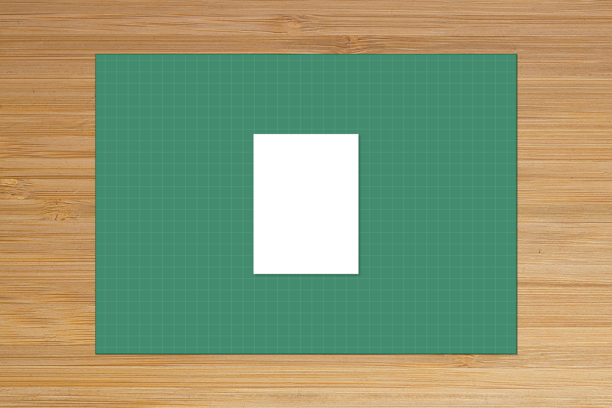
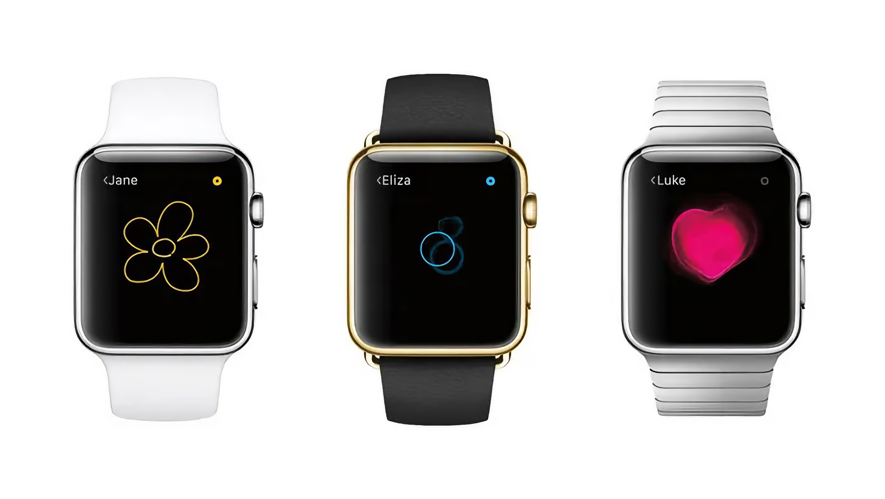
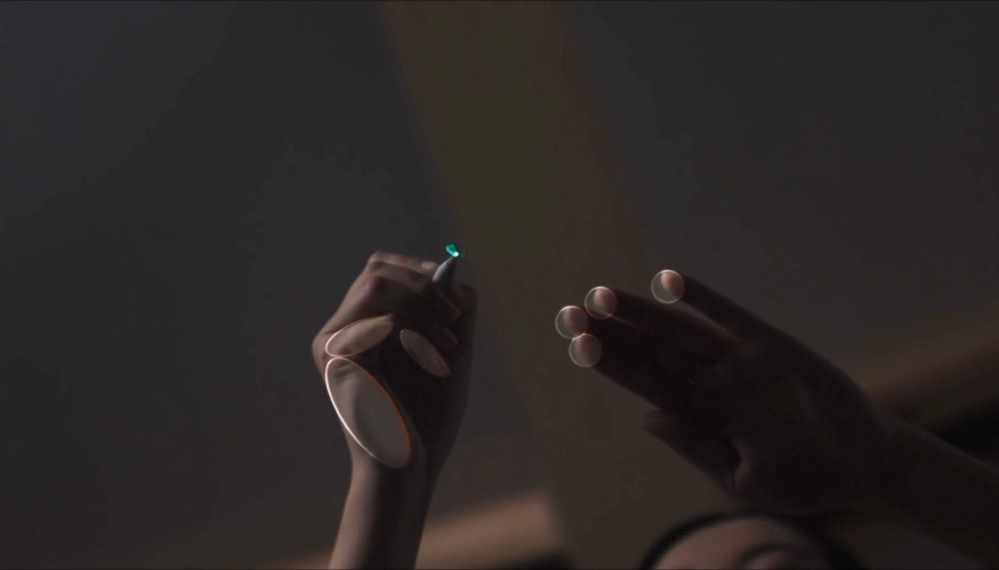
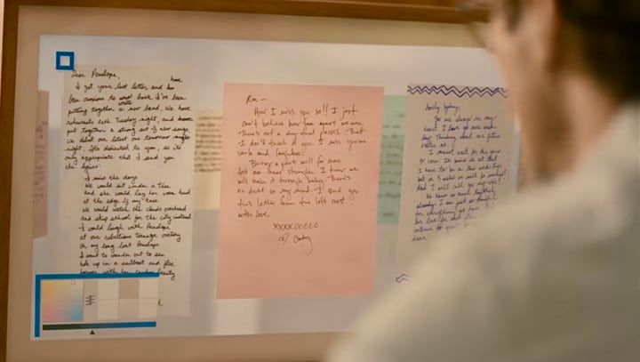

Script
Typing is quick, efficient, and always results in perfectly uniform text, but unlike in handwriting, there's no trace of you in typed text. Ask two people to type the same words, and the end result would be the same. However, if they were to handwrite those words, you may be able to discern that one of them is left-handed, for example, or even get a sense of their state of mind. There's something to the physicality of handwriting that typing strips away.
Now, I'm not saying that typed text doesn't have its place. Books and road signs, for example, need to be legible, text on computer screens needs to be dynamic and scalable, but when was the last time you wrote something down before you could forget it? When's the last time you wrote your grocery list on a loose piece of paper or sketched an idea? Do you remember what your handwriting looks like?
Handwriting is much more personal than typed text, and I think we could all use a little more of that in our predominantly digital lives, so I designed an app concept that explores how writing on a screen can preserve some of the character and intimacy of writing on paper.
The initial idea

The initial idea was simple, and it started with a question: could I build an experience around a single sheet of paper? I thought about launching the app, seeing a single page, tapping on it to make it fill the screen, and writing or sketching what was on my mind. Once I was done, I'd either share it or trash it. Fairly simple.
I have a green cutting mat on my desk, so I wanted to make it feel like my own workspace.
Here's a quick prototype of my initial idea. Launch, tap, write, share.
This is not an infinite canvas. I wanted to incorporate subtle ways to blend some of the constraints of physical paper with the benefits of digital, so, for example, once you run out of space on a sheet, you'd add a new one and continue.
Adding a sheet
I started experimenting with different ways to add a new sheet.
The first one simply creates a stack, which is visually appealing, but I'm not sure how scalable it is. It could become too cluttered if too many sheets are added.
The second one lays the sheets out in a carousel, which would allow you to quickly access the previous sheets before sharing. It also incorporates the stack, so I'm going with this one.
I want this to feel light and intuitive.
Digital Touch

When the Apple Watch launched over a decade ago, one of the highlight features was Digital Touch. Pressing the side button would bring up your contacts with quick access to communicate with them via call, text, or touch. With Digital Touch, you could get someone’s attention with a gentle tap, send them a quick sketch, or even share your own heartbeat.
I think about Digital Touch more than anybody on Earth, probably. Though the watch itself was like wearing a computer on your wrist, this feature made a piece of technology feel human. It was a somewhat tangible, ephemeral way to communicate in the digital realm, and I thought it was wonderful. What stayed with me was the feeling of someone being there on the other side of the screen. I wanted to explore how Script could make handwriting feel like a shared moment.
Friends
WIP
Live Page
Taking inspiration from Digital Touch, two people can share the same page and write to each other live and in the moment with a feature that I’m calling Live Page.
Messages will disappear, but not fully — like how erasing pencil marks leaves a faint trace on a sheet of paper. After the first person writes, their message will gradually become less opaque when the other person starts writing, and so on.

I’d also like to explore smudging the ink with a finger and showing a faint impression of the other person’s resting fingertips on the page. These small signs of touch could make the exchange feel more physical, as though someone were writing across the table from you.
The photo above is from Apple's iPad Pro 9.7" introduction video.
Writing in the AI era

In my favorite movie, Her, the main character's job involves writing letters for people on behalf of other people. He dictates his thoughts and they get transcribed by his computer and turned into bespoke handwritten letters, but the handwriting is, or appears to be, computer-generated.
I've been thinking about the movie more often lately because it's set in a future that feels a lot nearer now than it does further away.
In 2024, Apple introduced Smart Script on iPadOS. The feature "allows users to write quickly without sacrificing legibility by smoothing and straightening handwritten text in real time."
If you write with Smart Script, is it still your handwriting? The uneven strokes and small imperfections that tools like these try to clean up are what makes our handwriting recognizable. With Script, I'm trying to preserve that character.
Since turning 30 and becoming a father, I've been thinking more about what we leave behind. Software is transient in nature, but a little handwritten note can be something someone holds onto—in their wallet, on their refrigerator, in a shoe box, or even in their junk drawer.
Your handwriting is unique. Somebody can see something you wrote on a little piece of paper and know it was you who wrote it. I can't help but think there's something romantic about that. It's like a work of art. It's proof that you were here.